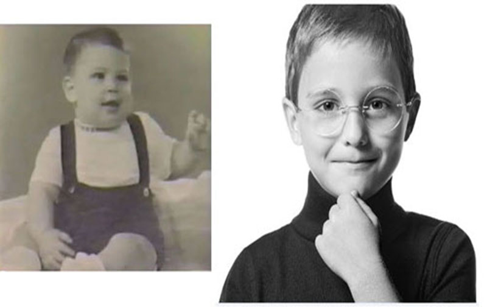
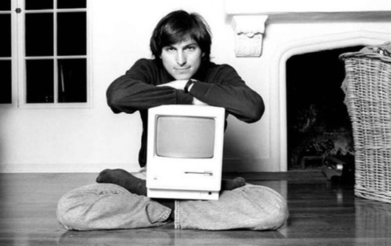

và những cống hiến của ông cho ngành Khoa Học Máy Tính
Giới thiệu lí lịch
Steve Jobs sinh ra tại TP San Fancisco, tiểu ban California, Hoa Kì. Tên đầy đủ của ông là Steven Paul. Jobs được nhận nuôi bởi vợ chồng người Mỹ là Paul Reinhold Jobs (1922-1993) và Clara Jobs (1924-1986).
 Hình 1: Steve Jobs lúc bé
Bố mẹ ruột của ông không thể nuôi dưỡng ông do khi sinh Jobs ra họ vẫn còn là sinh viên. Cụ thể bố của ông là Abdulfattah Jandali, một sinh viên đại học người Syria, sau này là giáo sư khoa học chính trị. Mẹ ruột của ông là Joanne Sinpson, một sinh viên đại học Mỹ sau này trở thành nhà ngôn ngữ học.người Khi đã lập gia đình, bà đã sinh và nuôi dưỡng đứa em ruột của Jobs, tiểu thuyết gia Mona Simpson.
 Hình 2: Jobs đã nuôi niềm đam mê với công nghệ từ rất sớm
Ông mất ngày 5 tháng 10 năm 2011. Sự ra đi của ông là được xem là một mất mát to lớn cho làng công nghệ thế giới. Thông tin về sự ra đi của “ Phù Thuỷ” công nghệ Steve Jobs khiến cả thế giới bàng hoàng. “Apple đã mất đi một tài năng có tầm nhìn và óc sáng tạo, cả thế giới đã mất đi một cá nhân kiệt xuât. Chúng ta, những người đã may mắn biết và làm việc cùng Steve, đã mất đi một người bạn đáng kính, một người thầy đầy cảm hứng”-CEO đương nhiệm của Apple Tim Cook đã viết trong mail gửi cho toàn bộ nhân viên của Apple thông báo về sự ra đi của Steve Jobs!